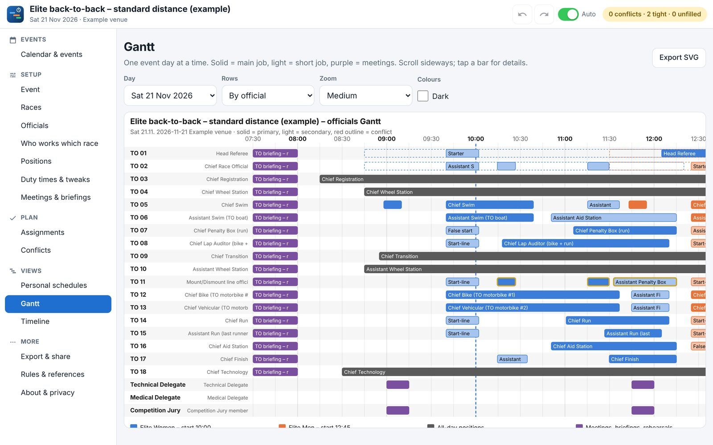
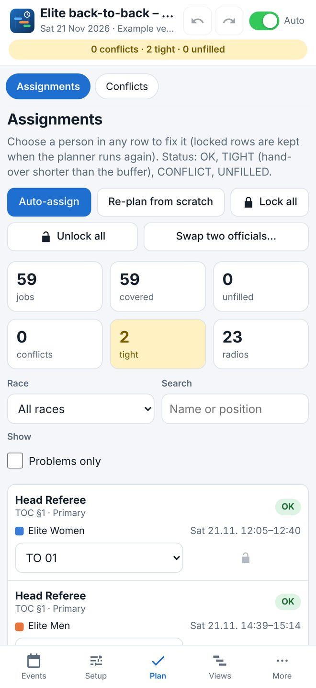

Races of any format
Super-sprint, sprint, standard, mixed relay, middle and long distance, over one or several days.
For iPhone, iPad, Mac, the web and Ubuntu
Plan the Technical Officials of a triathlon event in minutes: every official gets a main position, short jobs are added as second positions without time clashes, and the meetings and briefings the rules require are booked for the right people.


See the plan as a table, personal schedules, a Gantt chart and a timeline, and export it to Excel, LibreOffice, your calendar or a picture.
Super-sprint, sprint, standard, mixed relay, middle and long distance, over one or several days.
Positions and duty windows follow the World Triathlon TO Checklist 2025, rules follow the Competition Rules, and the race-week schedule follows the Event Organisers’ Manual.
The Elite athletes’ briefing at 16:00 the day before, Jury meetings, rehearsals and TO briefings are booked automatically.
Who works which race, availability, preferred positions, locked choices, and the radios needed.
Excel and LibreOffice workbooks, a calendar file, a picture of the Gantt chart, or the plan file to open on another device.
Your events stay on your device. No account, no tracking.
The web version is the full app. It works offline, and on a phone or tablet you can add it to the home screen.